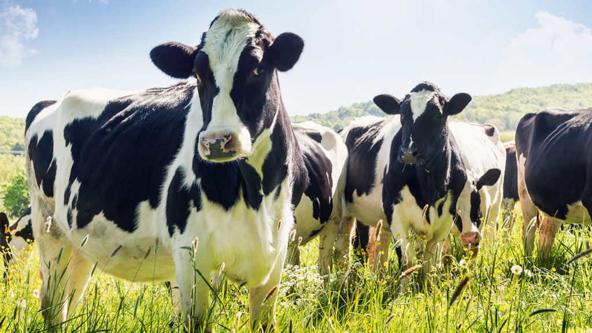
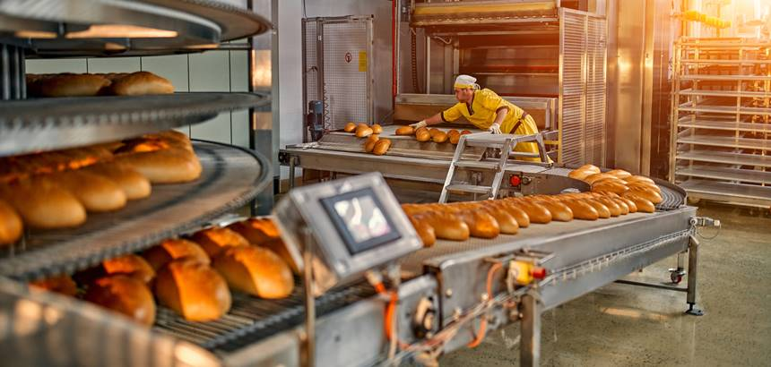
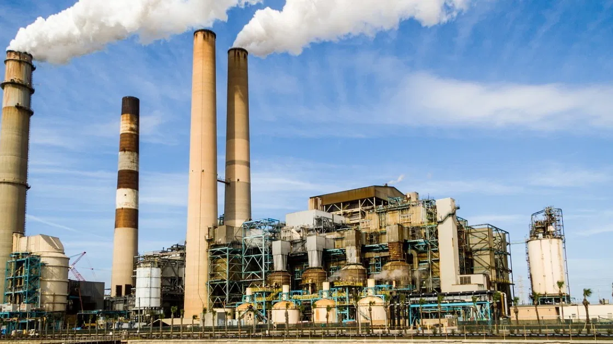

agro 5.0

Você já ouviu falar em agro 5.0? A revolução que promete conectar a cadeia produtiva do Agro de ponta a ponta pode estar mais perto do que você imagina.
Entenda o que esse termo realmente significa, suas principais tendências e como ficar antenado para garantir que o futuro do agro chegue, primeiro, na sua propriedade.
Agropecuária
A agropecuária envolve atividades agrícolas e pecuárias, ou seja, cultivação de vegetais e criação de animais. Tais atividades estão relacionadas, principalmente, ao fornecimento de matérias-primas diversas.
industrias alimenticia
A indústria alimentar ou indústria alimentícia é o conjunto de atividades industriais em que se preparam, normalmente em quantidades que devem ser comercializadas, alimentos ou ingredientes para a preparação de alimentos.[
industria
A indústria refere-se ao setor econômico responsável pela transformação de matérias-primas em produtos acabados ou semiacabados. É um conjunto de atividades que envolvem a produção em larga escala, utilizando máquinas e equipamentos para criar bens que serão utilizados por consumidores ou por outras indústrias